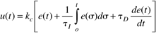
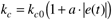
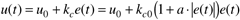
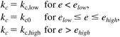

| [ Team LiB ] |
|
11.4 Nonlinear PID ControlThe fixed-parameter PID controller is ubiquitous in the process industries. The ideal PID controller has the form (see Chapter 5)  where it is understood that any bias associated with steady-state operation is absorbed into the integral term. Other forms for PID control are presented in Chapter 5. Often it is useful to have a nonlinear controller even if the process is linear. A common example is level control of a surge drum where the primary objective is to maintain a reasonably consistent outlet flow under disturbances in the inlet flow rate, subject to high and low drum level constraints. In this situation, some small nominal controller gain can be used when the level is close to the setpoint, and as the error increases, the gain can increase. A common choice is to make the proportional gain a function of the absolute value of the error,
 This means that the controller output is effectively proportional to the square of the error, as shown below for a P-only nonlinear controller.  An alternative to making the controller gain a continuous function of the error is to form a piecewise linear controller (sometimes called a gap controller), where (often kc,high = kc,low)  An example of nonlinear PID control is given in Module 10 (Surge Vessel Level Control). |
| [ Team LiB ] |
|